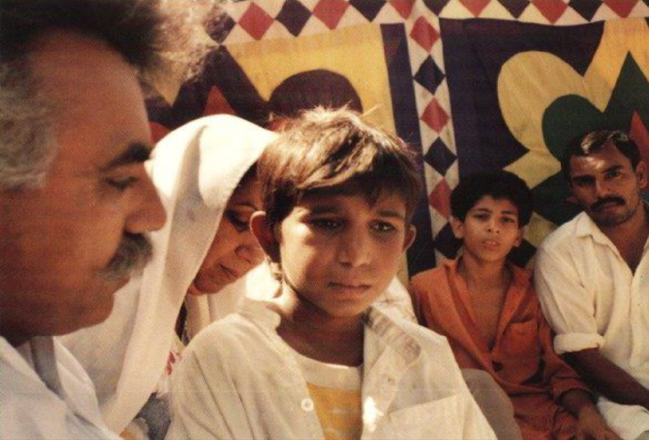

Iqbal is a child hero he is about five years old when he has his first working day in the carpet factory.
Later, when his mother Anayat needs money for an operation, she takes out a loan from a carpet factory owner called Ghullah.
Now Iqbal is a debt slave and Ghullah is in charge of his life.
The loan, or ‘peshgi’, is in Iqbal’s name. That means that Iqbal owes Ghullah the 5000 rupees (ca 600 US dollars) that his mother’s operation cost.
When Iqbal gets home from the carpet factory in the evenings, he collapses into bed and falls asleep. Sometimes Ghullah wakes him around midnight.
“We have a carpet delivery that has to be finished. Come on, get up.”
Iqbal worked in a carpet factory similar to this one, where young boys and girls work from morning to noon
The peshgi debt means that Iqbal has to go with Ghullah, who drags a sleepy Iqbal through the narrow streets to the carpet factory.
If Iqbal falls asleep at work, he is woken up by a blow from the carpet fork.
Iqbal after liberation. © Magnus Bergmar/Bergmar Produktion
Iqbal is finally free to go to school. © WCPF
Iqbal is very happy to be able to start attending ‘Our own school’, as the BLLF school for former debt slaves is called.
He tells his friends and children in other carpet factories that they don’t have to stay with their owners any longer.
In the Muridke area, children start leaving carpet factories in their hundreds and thousands.
Iqbal speaks at meetings. He always ends his speeches by saying: “We are...”. And all the children respond: “FREE!”
In marches and meetings, Iqbal and other children protest against the use of bonded labour and demand change. © Bergmar produktion
That evening he joins his relatives Lyaqat and Faryad Masih, who are taking food to Lyaqat’s father who is watering his fields.
All three of them sit on the same bike.
It is eight o’clock and it’s dark.
When the boys are halfway there, they hear two gunshot. Iqbal has been shot and killed.
Faryad can’t write, so later that night, he has to put his thumbprint at the bottom of a blank piece of paper.
Afterwards, the police can write whatever they like above hs thumb print, and claim that Faryad has signed the paper to say that it is true.
Iqbal is shot to death. (Click on the image to read the graphic novel). © WCPF
The next morning, a poor farmer called Ashraf Hero is arrested and accused of murdering Iqbal. The police torture him.
They hang him upside down from the ceiling and beat him with sticks and leather belts.
“You’re going to say that you killed that boy Iqbal and say whatever we tell you to. Or else we’ll kill you and your whole family.
You’re poor and worthless. No one cares what we do with you,” say the police.
The Human Rights Commission of Pakistan confirms that the police report is correct and that Hero, an innocent man, is the murderer.
As a result, the lie is spread all over the world by ambassadors and journalists, without being questioned.
The Human Rights Commission also claims, without proof, that the murder is nothing to do with the fact that Iqbal challenged the carpet makers.
The farmer, Hero, is kept out of the way. No one is allowed to meet him. But in court he is found not guilty.
The police write that Hero, who has never before held a rifle, just happened to hit Iqbal when he fired in the general direction of the boys.
In actual fact, Iqbal was hit by 120 pellets on his back, while the other boys were only hit by a total of two pellets.
Iqbal was the murderer’s target, and he was shot in the back when he tried to escape.
Iqbal’s sister Sobia came to Sweden to accept the award given to her brother after his death.
Here she is with HM Queen Silvia of Sweden and WCP Child juror Laura Hannant at Gripholm Castle in Marifred, Sweden. © WCPF
“Iqbal told me that he wanted to be a big lawyer,” recalls Sobia, who was ten when her big brother was murdered.
“He wanted to free the children in the carpet factories and give them an education so that poor children could have a better future.”